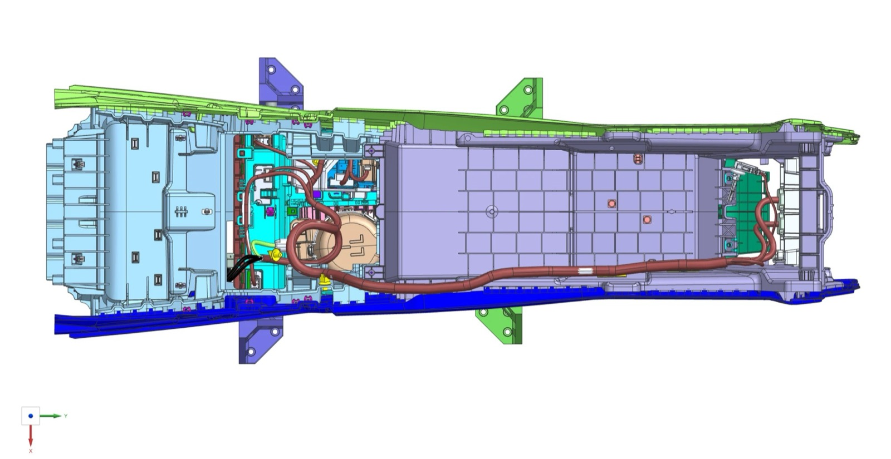

← All projects

NEXT2OEM – Automated Wire Harness Production
FAU – Institute FAPS × Audi | 2024 – 2026 | Graduate research assistant
Tooling for the Audi harness demonstrator

What?
- NEXT2OEM is an Audi-led research project (BMWK, 2023–2026) with FAPS and industry partners.
- Goal: digitise and automate the whole wire-harness value chain, from connector to vehicle assembly, to bring harness production back to Germany.
How?
- Helped build the demonstrator: fixtures, electric and pneumatic gripper fingers and a camera mount for the robot stations (Siemens NX).
- Redesigned Audi parts for 3D printing (FDM, PETG/PLA).
Results
- Gripper and camera tooling integrated in the demonstrator stations.
- Print-ready Audi parts for fast iterations of the setup.
- Project result: Audi validated the prototype on a centre-console harness in Ingolstadt.